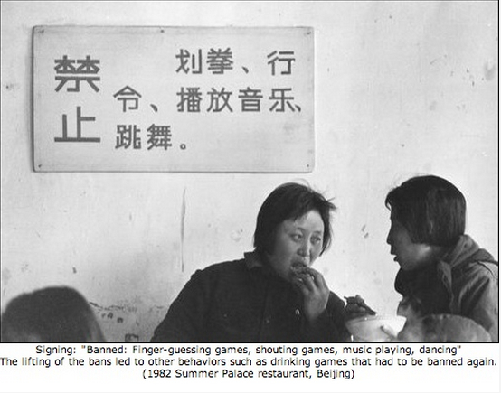

Cenário D: Desenvolvendo o pensamento histórico


Imagem: © zonaeuropa.com

Ralph Goodyear é professor de história em uma universidade pública de pesquisa no centro dos Estados Unidos. Ele tem uma turma de 72 estudantes de graduação cursando HIST 305, “Historiografia”. Nas três primeiras semanas de curso, Goodyear gravou uma série de videoaulas curtas de 15 minutos que abordavam os seguintes tópicos de conteúdo:
- as várias fontes utilizadas pelos historiadores (por exemplo, escritos anteriores, registros empíricos, incluindo registros de nascimento, casamento e óbito, relatos de testemunhas oculares, artefatos como pinturas, fotografias e evidências físicas como ruínas);
- os temas em torno dos quais a análise histórica costuma ser escrita;
- algumas das técnicas utilizadas pelos historiadores, como narrativa, análise e interpretação;
- três posições ou teorias diferentes sobre a história (objetivista, marxista, pós-modernista).
Os estudantes baixaram os vídeos de acordo com um cronograma sugerido por Goodyear. Eles frequentavam duas aulas presenciais de uma hora por semana, onde debatiam os temas específicos abordados nos vídeos. Os estudantes também tinham um fórum de discussão on-line no ambiente da disciplina no sistema de gestão de aprendizagem da universidade, onde Goodyear propunha temas semelhantes para discussão. Esperava-se que os estudantes fizessem pelo menos uma contribuição substantiva para cada tópico on-line, pela qual recebiam uma nota que compunha a avaliação final. Os estudantes também precisavam ler um livro-texto de referência sobre historiografia ao longo desse período de três semanas.
Na quarta semana, ele dividiu a turma em doze grupos de seis e pediu a cada grupo que pesquisasse a história de qualquer cidade fora dos Estados Unidos nos últimos 50 anos, aproximadamente. Eles podiam utilizar quaisquer fontes que pudessem encontrar, incluindo fontes on-line, como reportagens de jornais, imagens, publicações de pesquisa, etc., bem como o acervo da própria biblioteca da universidade. Ao redigirem o relatório, precisavam fazer o seguinte:
- escolher um tema específico que cobrisse os 50 anos e escrever uma narrativa baseada nesse tema;
- identificar as fontes que finalmente utilizaram no relatório e discutir por que selecionaram algumas fontes e descartaram outras;
- comparar a sua abordagem com as três posições teóricas abordadas nas videoaulas;
- postar o seu relatório na forma de um portfólio eletrônico (e-portfolio) on-line no ambiente da disciplina no sistema de gestão de aprendizagem da universidade.
Eles tinham cinco semanas para realizar esta tarefa.
As últimas três semanas da disciplina foram dedicadas a apresentações de cada um dos grupos, com comentários, discussões e perguntas, tanto em sala de aula quanto on-line (as apresentações presenciais eram gravadas e disponibilizadas on-line). Ao final do curso, os estudantes atribuíam notas ao trabalho de cada um dos outros grupos. Goodyear levou essas notas dos estudantes em consideração, mas reservou-se o direito de ajustar as avaliações finais, com uma explicação do motivo pelo qual realizou o ajuste. Goodyear também atribuiu a cada estudante uma nota individual, baseada tanto na nota do grupo quanto em sua contribuição pessoal nas discussões on-line e presenciais.
Goodyear comentou que ficou surpreso e encantado com a qualidade do trabalho dos estudantes. Ele disse: “O que mais gostei foi que os estudantes não estavam apenas aprendendo sobre história; eles estavam fazendo história”.
Baseado em um caso real, com algumas adaptações.